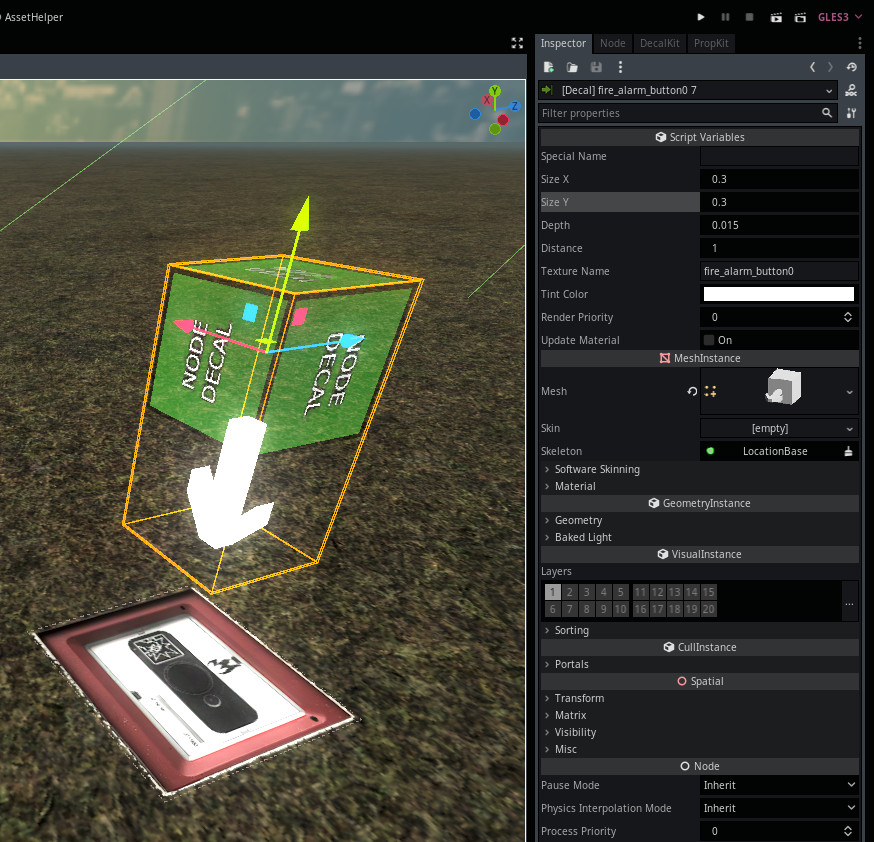

Module: location_decal
Documentation last edited: October 23, 2025 at 14:33 UTC
Description

LocationDecal
creates a projected decal. It doesn't have that much of use as projected decals aren't very optimized and have a weird lighting, but they are still useful to apply character's blood on surfaces properly.
Usage example
# Simple creation
var img = load("res://path/to/texture.png")
var node = LocationDecal.create_fast(img)
var loc_base = LocationBaseScene.get_scene()
loc_base.add_child(node)
node.global_position = Vector3(0.0, 1.0, 0.0)
node.rotation_degrees = Vector3(45.0, 0.0, 0.0)
# Creating it in a way to look at the surface's normal
# You can get a normal of a surface by using raycasts
func hit_decal(texture: Texture, position: Vector3, normal: Vector3):
if not texture:
return
var loc_base = LocationBaseScene.get_scene()
var decal = LocationDecal.create_fast(texture)
if not decal:
return
loc_base.add_child(decal)
decal.scale = Vector3(0.3, 0.3, 0.01)
decal.global_transform.origin = position
decal.look_at(
position + (normal * 2.0) + (Vector3.ONE * 0.001),
Vector3.UP
)
General Information
Root directories list
assets, docs, src
Nodes
LocationDecal
LocationDecalRemover
remove_after_time
Classes
None
Resources
None
Other Scripts
None